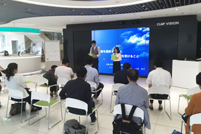
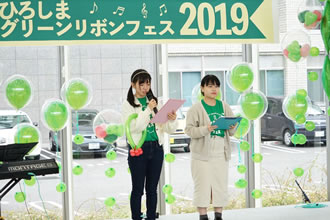
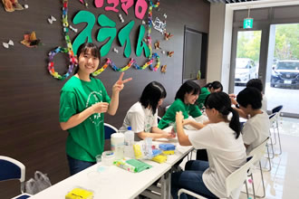

グリーンリボン推進協会では、当協会の理念、趣旨にご賛同いただける方のご協力、ご参加をお待ちしております。
皆様が参加しやすい形として、グリーンリボンパートナー（賛助会員）、ご支援（寄附）、ボランティアの3つの参加の形をご用意しております。
臓器移植によって一人でも多くのいのちが救える未来の実現を目指して、私たちと一緒に活動しませんか？
| 参加のかたち | |||
|---|---|---|---|
| 種類 | グリーンリボンパートナー （賛助会員） |
ご支援 （寄附） |
ボランティア |
| こんな方 | 私たちの趣旨に賛同し、協力もしくは、ともに活動してくださる個人の方 | 私たちの趣旨に賛同し、活動を支援してくださる個人または団体様 | メンバーと一緒にグリーンリボン イベントを盛り上げてくださる高校生、学生、社会人の方 |
| 概要等 |
|
|
|
グリーンリボン
パートナー
（賛助会員）
私たちの趣旨に賛同し、協力もしくは、ともに活動してくだるグリーンリボンパートナーを募集しています。パートナーのみなさんには、ニュースレターの随時発行、情報交換会の開催など、色々な企画をご案内いたします。
- 年会費
- 一口3千円
- 振込口座
- ゆうちょ銀行 口座記号番号：00930-5-236550
特定非営利活動法人グリーンリボン推進協会 ﾄｸﾋ)ｸﾞﾘｰﾝﾘﾎﾞﾝｽｲｼﾝｷｮｳｶｲ - お問い合わせ先
- TEL/FAX 072-720-7180
メール thanks@greenribbonac.com
※入会・振込をしていただいた方は、①お名前 ②ご住所 をご明記の上、当協会メールアドレス(thanks@greenribbonac.com) まで、ご連絡をお願いいたします。
当協会への
ご支援のご依頼
（団体、個人様へ）
『市民ボランティアによる移植医療の普及啓発活動の輪を日本全国に広めたい！』
そんな熱い想いを持ちながら、現在、主に東京、大阪、広島で市民ボランティアによる地域に根ざしたイベント運営を行っています。今後、このような活動を全国に広めていき、一人でも多くの方に移植医療に知ってもらうため、どうか活動のご支援をお願いいたします。ご支援いただいた団体様、個人様は当協会HPにてご紹介いたします（匿名も可）。
ご支援をご検討いただく際には、以下の寄附趣意書をご一読いただきますようお願いいたします。
寄附趣意書- 支援額
- 団体 一口1万円〜
個人 一口1千円〜 - 振込口座
-
ゆうちょ銀行
口座記号番号：00930-5-236550
特定非営利活動法人グリーンリボン推進協会 ﾄｸﾋ)ｸﾞﾘｰﾝﾘﾎﾞﾝｽｲｼﾝｷｮｳｶｲ三菱東京UFJ銀行箕面支店（店舗717）
特定非営利活動法人グリーンリボン推進協会
口座番号：0126083 - お問い合わせ先
- TEL/FAX 072-720-7180
メール thanks@greenribbonac.com
※振込をしていただいた方は、下記の①または②の方法にて当協会までご連絡をお願いいたします。
① 寄附申込書をダウンロードし、必要事項を入力の上、PDFを添付、メール(thanks@greenribbonac.com) にてご連絡
② 寄附申込書をダウンロードし、必要事項を入力の上、FAX（072-720-7180）にてご連絡
ボランティア募集
各イベントごとのお手伝いをしてくださるボランティアを募集中です！メンバーと一緒にグリーンリボンイベントを盛り上げませんか？
- 対象
- 高校生、学生、社会人問わず広く募集しています
- ボランティア内容
- イベント当日運営のお手伝い、希望者は企画段階からのメンバー会議参加も可能です
- その他
- 高校生、学生にはボランティア参加証明書を発行いたします
- お問い合わせ先
- 現在、広島支部でボランティアを募集しています
広島支部 hiroshima@greenribbonac.com
- 
- 
- 